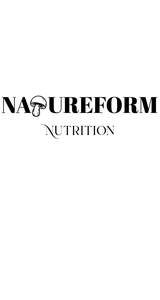

Trade Mark Journal No.2026/006 6 February 2026
UK00004326420 19 January 2026 (5)

- Class 5
- Vitamin supplements; Nutritional supplements; Dietary supplements; Probiotic supplements; Herbal supplements; Homeopathic supplements; Calcium supplements; Flaxseed dietary supplements; Chlorella dietary supplements; Anti-oxidant supplements; Colostrum supplements; Protein supplements; Dietary supplements consisting of vitamins; Prebiotic supplements; Lecithin dietary supplements; Colostrum dietary supplements; Food supplements; Mineral dietary supplements; Zinc dietary supplements; Mineral nutritional supplements; Acai powder dietary supplements; Propolis dietary supplements; Liquid dietary supplements; Dietary and nutritional supplements; Nutraceuticals for use as a dietary supplement; Vitamin supplements for animals; Vitamin and mineral supplements; Protein dietary supplements; Linseed dietary supplements; Liquid nutritional supplements; Liquid vitamin supplements; Yeast dietary supplements; Casein dietary supplements; Enzyme dietary supplements; Dietary supplements for animals; Dietary supplements for pets; Anti-oxidant food supplements; Dietary food supplements; Alginate dietary supplements; Albumin dietary supplements; Flaxseed oil dietary supplements; Liquid herbal supplements; Vitamin and mineral supplements for pets; Wheat dietary supplements; Dietary supplements for humans; Dietary supplements for infants; Pollen dietary supplements; Energy gels (dietary supplements); Glucose dietary supplements; Protein powder dietary supplements; Vitamin and mineral food supplements; Dietary supplements in powder form; Mineral dietary supplements for animals; Dietary supplements with a cosmetic effect; Nutritional supplements for veterinary use; Medicated food supplements; Dietary supplements for medical use; Mineral dietary supplements for humans; Whey protein dietary supplements; Food supplements for sportsmen; Nutritional supplements consisting primarily of magnesium; Protein supplements for animals; Dietary supplements consisting primarily of magnesium; Vitamin supplement patches; Health-aid foods supplements containing ginseng; Soy protein dietary supplements; Health food supplements made principally of vitamins; Vitamin preparations in the nature of food supplements; Dietary supplement drinks; Soy isoflavone dietary supplements; Dietary supplements and dietetic preparations; Nutritional supplements consisting of fungal extracts; Linseed oil dietary supplements; Nutritional supplements consisting primarily of calcium; Brewer's yeast dietary supplements; Folic acid dietary supplements; Dietary supplements consisting primarily of calcium; Calcium tablets as a food supplement; Nutritional supplements consisting primarily of zinc; Dietary supplements for controlling cholesterol; Nutritional supplements for livestock feed; Nutritional supplements consisting primarily of iron; Herbal dietary supplements for persons special dietary requirements; Dietary supplements and dietetic preparations containing CBD oil; Food supplements for veterinary use; Dietary supplements consisting primarily of iron; Food supplements for dietetic use; Dietary supplements promoting fitness and endurance; Nutritional supplement energy bars; Multivitamins; Medicated supplements for animal feedstuffs; Dietary supplement drink mixes; Dietary food supplements used for modified fasting; Health food supplements made principally of minerals; Feed supplements for veterinary use; Mineral supplements for feeding livestock; Ganoderma lucidum spore powder dietary supplements; Food supplements for medical purposes; Medicated supplements for foodstuffs for animals; Activated charcoal dietary supplements; Zinc supplement lozenges; Fitness and endurance supplements; Food supplements in liquid form; Food supplements for non-medical purposes; Natural dietary supplements for treating claustrophobia; Protein supplement shakes; Dietary supplements for pets in the nature of a powdered drink mix; Wheat germ dietary supplements; Ground flaxseed fiber for use as a dietary supplement; Vitamin supplements for use in renal dialysis; Royal jelly dietary supplements; Antibiotic food supplements for animals; Pine pollen dietary supplements; Diet capsules; Health food supplements for persons with special dietary requirements; Dietary supplements for humans not for medical purposes; Food supplements consisting of amino acids; Nutritional supplement meal replacement bars for boosting energy; Powdered nutritional supplement drink mix; Dietary supplements for human beings; Fodder supplements for veterinary purposes; Vitamins and vitamin preparations; Dietary pet supplements in the form of pet treats; Preparations for supplementing the body with essential vitamins and microelements; Health-aid foods supplement containing red ginseng; Capsules for medicines; Multi-vitamin preparations; Food supplements consisting of trace elements; Nutritional supplements made of starch adapted for medical use; Powdered nutritional supplement energy drink mix; Powdered fruit-flavored dietary supplement drink mix; Delivery agents in the form of coatings for tablets that facilitate the delivery of nutritional supplements; Preparations of vitamins; Antioxidant pills; Multivitamin preparations.
Paul Hume a partner in the Home Fluency Partnership
Samuel Hume